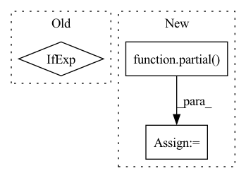

Pattern ID :717

Before Change
sparse_layer = cast_tuple(sparse_attn, depth)
for _, sparse_attn in zip(range(depth), sparse_layer):
attn_class = Attention if not sparse_attn else partial(SparseAttention, sparse_attn_global_indices = sparse_attn_global_indices)
layers.append(nn.ModuleList([
PreNorm(dim, attn_class(dim, causal = causal, seq_len = seq_len, heads = heads, dim_head = dim_head, dropout = attn_dropout, noncausal_attn_len = noncausal_attn_len)),
After Change
elif attn_type == "sparse":
attn_class = partial(SparseAttention, sparse_attn_global_indices = sparse_attn_global_indices)
elif attn_type == "axial_row":
attn_class = partial(SparseAxialCausalAttention, seq_len = seq_len, axis = 0, image_size = image_fmap_size)
elif attn_type == "axial_col":
attn_class = partial(SparseAxialCausalAttention, seq_len = seq_len, axis = 1, image_size = image_fmap_size)
elif attn_type == "conv_like":
attn_class = partial(SparseConvCausalAttention, seq_len = seq_len, image_size = image_fmap_size)
In pattern: SUPERPATTERN
Frequency: 3
Non-data size: 3
Instances
Fragment ID: 2540646
Project Name: lucidrains/dalle-pytorch
Commit Name: de732e8756750e161f0e51fac8baf9bcdb13182e
Time: 2021-02-10
Author: lucidrains@gmail.com
File Name: dalle_pytorch/transformer.py
M Class Name: Transformer
N Class Name: Transformer
M Method Name: __init__(1)
N Method Name: __init__(1)
M Parent Class: nn.Module
N Parent Class: nn.Module
M File Name: dalle_pytorch/transformer.py
N File Name: dalle_pytorch/transformer.py
M Start Line: 67
M End Line: 68
N Start Line: 75
N End Line: 92
'>
Before Change
norm_class = ScaleNorm if use_scalenorm else nn.LayerNorm
prenorm_fn = partial(PreNorm, dim, norm_class = norm_class)
prenorm_fn = Rezero if use_rezero else prenorm_fn
ff_kwargs, kwargs = groupby_prefix_and_trim("ff_", kwargs)
attn_kwargs, _ = groupby_prefix_and_trim("attn_", kwargs)
After Change
self.residual_attn = residual_attn
norm_class = ScaleNorm if use_scalenorm else nn.LayerNorm
norm_fn = partial(norm_class, dim)
norm_fn = nn.Identity if use_rezero else norm_fn
branch_fn = Rezero if use_rezero else None
'>
Fragment ID: 2540647
Project Name: lucidrains/x-transformers
Commit Name: 257fee10394c3cfb3467537dba53d8a610dc8aee
Time: 2020-12-27
Author: lucidrains@gmail.com
File Name: x_transformers/x_transformers.py
M Class Name: AttentionLayers
N Class Name: AttentionLayers
M Method Name: __init__(15)
N Method Name: __init__(13)
M Parent Class: nn.Module
N Parent Class: nn.Module
M File Name: x_transformers/x_transformers.py
N File Name: x_transformers/x_transformers.py
M Start Line: 294
M End Line: 331
N Start Line: 288
N End Line: 347
'>
Before Change
// upsampling klass
upsample_klass = BilinearUpsample if bilinear_upsample else Upsample
// upsampling layers
After Change
if bilinear_upsample:
upsample_klass = partial(InterpolateUpsample, mode = "bilinear")
elif nearest_neighbor_upsample:
upsample_klass = partial(InterpolateUpsample, mode = "nearest")
else:
upsample_klass = Upsample
// upsampling layers
'>
Fragment ID: 2540658
Project Name: lucidrains/imagen-pytorch
Commit Name: f5d904c44c2dd9cb89fc7f729e7546a263b2f91f
Time: 2022-06-26
Author: lucidrains@gmail.com
File Name: imagen_pytorch/imagen_pytorch.py
M Class Name: Unet
N Class Name: Unet
M Method Name: __init__(1)
N Method Name: __init__(1)
M Parent Class: nn.Module
N Parent Class: nn.Module
M File Name: imagen_pytorch/imagen_pytorch.py
N File Name: imagen_pytorch/imagen_pytorch.py
M Start Line: 1227
M End Line: 1227
N Start Line: 1228
N End Line: 1239